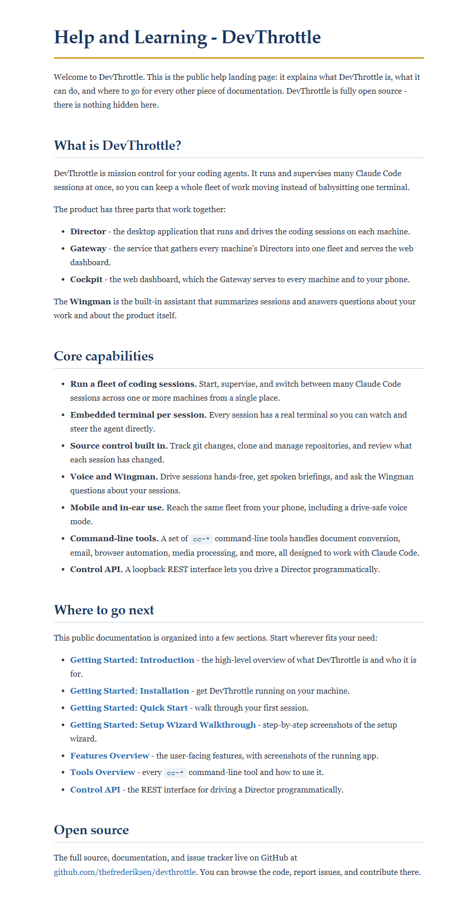

Authored a new public Help and Learning landing page for the DevThrottle
website at docs/public/help/01-help.md and registered it as a new
help category (placed first) in the manifest docs/public/index.json.
The page explains what DevThrottle is, lists its core capabilities, and links to every other
public documentation section (getting-started, features, tools, api) and to the GitHub
repository.
The content is kept consistent with the in-product Cockpit Learning page landed by issue #472 (pull request #618): same definition of DevThrottle as "mission control for your coding agents", the same three-part structure (Director / Gateway / Cockpit), the same Wingman description, and the same open-source message and repository link.
This is a docs-only change. No application container (CcDirector.*) was modified,
so per the issue's Proof Target the proof is the rendered page plus the manifest consistency
check, not an app screenshot.
docs/public/help/01-help.md - new public help landing page (created).docs/public/index.json - added the help category with the new page (edited).docs/cencon/proof/issue-473/* - this proof (report, rendered HTML, screenshot, check script + output).| # | Criterion | Expected | Actual | Result |
|---|---|---|---|---|
| 1 | A new public help page exists under docs/public/ describing what DevThrottle is and linking to getting-started, tools, api, and the GitHub repo. |
A rendered markdown page reads as the public help landing, with an overview and links to the other docs and the repo. | docs/public/help/01-help.md created. Rendered output (see help-page-rendered.html and help-page-screenshot.png) shows the "What is DevThrottle?" overview, a "Core capabilities" list, a "Where to go next" resource-link list, and the GitHub repo link. |
PASS |
| 2 | The new page is listed in docs/public/index.json with a correct file path. |
The manifest contains an entry whose file points at the new page. |
A new help category was added with page { "id": "help", "title": "Help and Learning", "file": "help/01-help.md" }. The path matches the file on disk. |
PASS |
| 3 | index.json passes the consistency check: every manifest file exists on disk, and every doc page under docs/public/ (except index.json) has a manifest entry. |
A check listing manifest paths vs on-disk pages reports zero mismatches. | check_manifest.py reports 14 manifest entries and 14 on-disk pages, Rule 1 OK, Rule 2 OK, TOTAL MISMATCHES: 0, RESULT: PASS (full output in manifest-check.txt, reproduced below). |
PASS |
| 4 | All in-page links resolve to real targets (no dead relative links to other docs/public pages or to the repo). | Every relative .md link on the page points to an existing file, and the repo URL is correct. |
All 7 relative links resolve to existing files (verified by file-existence check). The repo link is https://github.com/thefrederiksen/devthrottle - the same URL used by the in-product Learning page (#472), so it is correct. |
PASS |
DevThrottle docs/public manifest consistency check Manifest entries (declared pages): 14 Markdown pages found on disk: 14 RULE 1 - every manifest file exists on disk: OK - all 14 manifest entries resolve to a real file. RULE 2 - every on-disk page is listed in the manifest: OK - all 14 on-disk pages are listed in the manifest. TOTAL MISMATCHES: 0 RESULT: PASS - zero mismatches.
OK ../getting-started/01-introduction.md OK ../getting-started/02-installation.md OK ../getting-started/03-quick-start.md OK ../getting-started/04-setup-wizard-walkthrough.md OK ../features/01-overview.md OK ../tools/01-overview.md OK ../api/01-control-api.md Repo link: https://github.com/thefrederiksen/devthrottle (correct - matches #472)
Full rendering: help-page-rendered.html. Screenshot below.

No drift. This is a docs-only content change under docs/public/; no architecture
container or security profile (docs/cencon/) is affected, and no blocking security
rule applies.